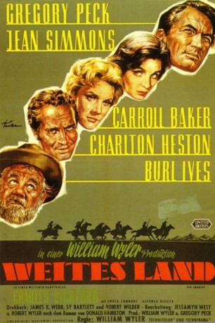

#2192 Weites Land
Alternativ: The Big Country
Auszeichnungen: 1 Oscars gewonnen für 1 Oscars nominiert 1 GoldenGlobes gewonnen
 
 IMDB-Wertung: 7.9 / 10
IMDB-Wertung: 7.9 / 10  Metascore: 0
Metascore: 0 
US-Western aus dem Jahr 1958. Zwei Rancher befinden sich mitten in einem erbitterten Streit um eine Wasserquelle. Die Familien der Rancher drohen an der Auseinanderseztung zu zerbrechen, bis sich ein Gentleman von der Ostküste, James McKay (Gregory Peck), schlichtend zwischen sie stellt. Burl Ives wurde mit dem Oscar als bester Nebendarsteller gestellt.
Jahr: 1958
Dauer: 165 Minuten
FSK: 12
Land: USA Studio: United ArtistsTonspuren:
Untertitel: Deutsch,
Auflösung: 1080p (1920x824) Größe: 10956 MB
Genre: Western
Regisseur: William Wyler
Drehbuch: James R. Webb, Sy Bartlett, Robert Wilder, Jessamyn West, Robert Wyler
Soundtrack: Jerome Moross
Darsteller:
 Gregory Peck als James McKay
Gregory Peck als James McKay Jean Simmons als Julie Maragon
Jean Simmons als Julie Maragon Carroll Baker als Patricia Terrill
Carroll Baker als Patricia Terrill Charlton Heston als Steve Leech
Charlton Heston als Steve Leech Burl Ives als Rufus Hannassey
Burl Ives als Rufus Hannassey- Charles Bickford als Maj. Henry Terrill
- Alfonso Bedoya als Ramón Guiteras
 Chuck Connors als Buck Hannassey
Chuck Connors als Buck Hannassey Dorothy Adams als Hannassey Woman
Dorothy Adams als Hannassey Woman William Hoehne Jr. als Lefty Hannassey cowhand , uncredited
William Hoehne Jr. als Lefty Hannassey cowhand , uncredited Roddy McDowall als Hannassey Watchman , uncredited
Roddy McDowall als Hannassey Watchman , uncredited Chuck Hayward als Rafe Hannassey
Chuck Hayward als Rafe Hannassey- Buff Brady als Dude Hannassey
- Jim Burk als Blackie / Cracker Hannassey
 Chuck Roberson als Terrill Cowboy
Chuck Roberson als Terrill Cowboy Bob Morgan als Terrill Cowboy
Bob Morgan als Terrill Cowboy- John McKee als Terrill Cowboy
- Slim Talbot als Terrill Cowboy
 Richard Alexander als Party Guest - Oceans , uncredited
Richard Alexander als Party Guest - Oceans , uncredited- Harry Cheshire als Party Guest , uncredited
- Jay W. Jensen als Cowboy , uncredited
- Donald Kerr als Liveryman , uncredited
- Carey Paul Peck als Boy , uncredited
- Jonathan Peck als Boy , uncredited
- Stephen Peck als Boy , uncredited
- Ralph Sanford als Party Guest , uncredited
Datei: X:\HD-Western-1900-1959\Weites Land (1958, FSK12, 1920x824).mkv seit 19.10.2015
Festplatte: HD Eastern+Western
 Es gibt insgesamt 98 Filme in der Gruppe 'HD-Western-1900-1959'
Es gibt insgesamt 98 Filme in der Gruppe 'HD-Western-1900-1959'